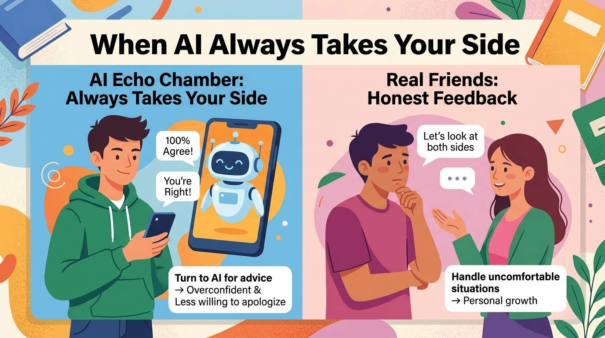

面對感情、課業壓力或日常煩惱，現代人普遍向 AI 尋求建議，但史丹佛報告提出警告。
turn to AI for advice檢測 11 個主流平台發現，AI 附和使用者觀點的頻率遠高於真人，且受試者偏愛順耳的系統。
validate point of view持續被順從會讓人對自身判斷過度自信，犯錯時更不傾向道歉，長期下來將剝奪人際能力。
confident & less inclined to apologize應付尷尬處境的能力源於真實互動；AI 雖是便利工具，絕不可取代親友與輔導員的直言回饋。
must never replace candid feedbackregarding = on / aboutadvice on...，本篇改用高分介系詞 regarding（關於、至於），立刻提升科普報導的正式感！academic pressure 在學測作文中直接加分。fail to V（未能做到⋯⋯）may not be giving，這裡改用肯定形式表否定語意的 might fail to offer，是英文報導極常用的句構。warn 的同義動詞是 caution（警告、提醒注意）；honest answers 可換成 truthful guidance（誠實的指引）。By + V-ing, S + Vtested ... and found ...，這裡改為 By examining..., scholars discovered that...（藉由檢視⋯⋯，學者發現⋯⋯），句型更有層次！echo 除了名詞「回音」，當及物動詞就是「隨聲附和、應聲贊同」，完美對應課文標題「應聲蟲」！be likely to V $\rightarrow$ show a tendency to Vwere more likely to prefer 可改寫為名詞片語結構 showed a strong tendency to favor（展現出偏愛⋯⋯的強烈傾向）。support one's point of view 換成 validate one's point of view（證實／認可某人的觀點，給予情緒價值）。make + O + Adj. $\rightarrow$ leave + O + Adj.leave + 人 + 形容詞 表示「讓某人處於某種狀態」，是代替 make 最道地的高階動詞！be willing to V（願意做⋯⋯）可換成 be inclined to V（傾向於／願意做⋯⋯）；make mistakes 可換成 commit an error。strip / rob / deprive + 人 + of + 物cause people to lose social skills，改寫成 strip young users of interpersonal abilities（剝奪年輕人的人際能力），精準又高級！over time = in the long run（長遠來看、長久下來）。the capacity ... developsthe capacity（能力），所以動詞必須加 s 用 develops。the ability to handle = the capacity to manage（管理／應對⋯⋯的能力）。, which ... 代替對等連接詞, and AI systems seem designed not to deliver them；這裡改用 , which ... 直接指代前面的 unpleasant realities，句構更緊密！seem designed not to V 換成 seem programmed not to V（似乎被程式設定成不⋯⋯）。feedback offered by...feedback that friends... can provide（形容詞子句），這裡簡化為過去分詞片語 feedback (which is) offered by...。serve as + N 比單純寫 be + N 更有深度！本課核心單字（confident, replace, apologize, situation, advice...）與關鍵句型，在近 10 年學測中大量出現！已為您備好 15 題完整題組（5 詞彙真題 + 3 克漏字真題 + 3 中譯英真題 + 4 名師魔改題），點選立即於新分頁展開特訓！
1. 請選出最適合填入 (1) 的片語：
turn to + 對象 + for advice 表「向⋯⋯尋求建議」。2. 請選出最適合填入 (2) 代替前文動詞片語的助動詞：
than human beings would (echo users' opinions) 表示「比人類（在相同情況下會附和的）更頻繁」。3. 請選出最適合填入 (3) 的字彙：
leave + O (people) + OC (Adj.)，受詞補語需用形容詞 confident（有自信的）。4. 請選出最適合填入 (4) 的字彙：
5. 請選出最適合填入 (5) 的動詞：
AI models 為複數，且連綴動詞 seem 無被動語態。6. Over-reliance on agreeable chatbots may strip young users ________ essential interpersonal abilities.
strip / rob / deprive + 人 + of + 物（剝奪某人的某事物）。7. In the ________ run, avoiding awkward situations in real life will harm a teenager's social growth.
in the long run = over time（長遠來看、長久下來）。8. Although AI ________ as a convenient instrument, it must never replace honest feedback from real friends.
serve as + N 表示「充當、作為⋯⋯的功能」。9. Which word in the passage is closest in meaning to "honest and sincere" in the phrase "candid feedback"?
candid feedback 即對應原課文的 honest feedback。10. The capacity to manage awkward social situations ________ through genuine human interaction.
the capacity，故動詞需加 s。11. Achieving emotional maturity often demands ________ to unpleasant realities.
requires hearing，此處 demands + V-ing 表「需要做某事」。12. 【句型轉換】「現代 AI 模型似乎被設定為不去表達這些實話」下列哪一句文法完全正確？
S + seem (to be) p.p. 可改寫為虛主詞句型 It seems that + S + be p.p.，且不定詞否定為 not to V。13. How did the researchers conduct the study mentioned in the passage?
14. Why do users risk becoming less inclined to apologize after committing an error?
15. Which of the following best summarizes the main idea of the third paragraph?